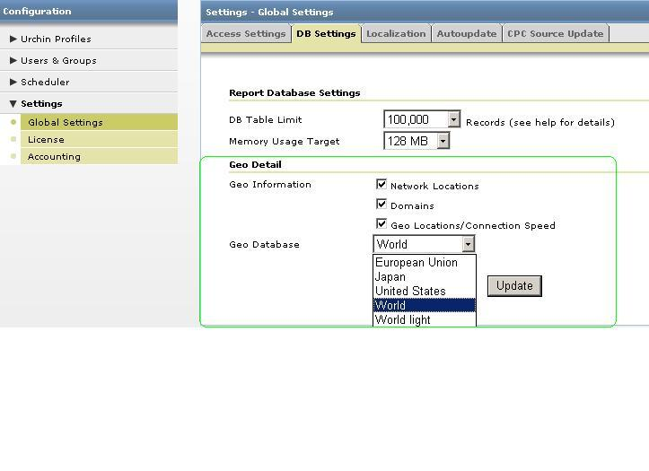
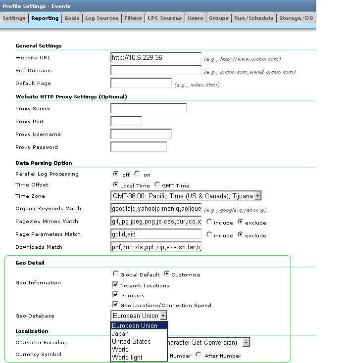

[Urchin7]: Geo changes for Urchin 7
Customizable Geo/DNS Data (Urchin 7.0+)
Beginning with Urchin 7.0, Geo Data has been divided into the following databases:
- Domains database (Domains report);
- Organizations database (Network Location);
- Several Metro databases (Geo Location/Geo Map Overlay/Connection Speed).
Urchin ships with several Metro databases, each providing different levels of metro information:
- World (contains detailed Country/Region/City information for the World)
- World Lightweight (contains only Country-level information for the World)
- US (contains detailed information for the US and country level information for other countries)
- Europe (contains detailed information for major EU markets (DE,GB,FR,ES,IT,NL) and country level information for other countries)
- Japan (contains detailed information for Japan and country level information for other countries)
GeoDB settings can be defined globally or at the profile level.
Global GeoDB settings
To change GeoDB settings per Urchin instance, go to Configuration > Settings > Global Settings > DB Settings tab ->Geo Detail section.
Network LocationsDomains and Geo Locations/Connection Speed are enabled by default; World geo database is selected by default.

Note: Only SuperAdmin users can change Global GeoDB settings.
Profile GeoDB settings
To change GeoDB settings for a profile, go to Configuration -> Urchin Profiles -> Profile Settings -> Reporting tab -> Geo Detail section.

Custom DNS Entries
Beginning with Urchin 7.0, it's possible to define custom DNS entries.
When using either the domain.local file in the data/geodata directory or some other custom file, the format of the entries should be one entry per line, beginning with the IP or network address, followed by a space or tab, and then the domain for that address. Spaces are not allowed in the domain name. Allowed forms include the following:
-
192.168.10.100 somehost.somedomain.net (Explicit hostname IP)
-
192.168.10.16/24 somedomain.net (IP address with network prefix)
-
192.168.10.0/24 somedomain.net (subnet with network prefix)
When processing Urchin will check for specific IPs first and then look for encompassing network ranges.
geo-update: DNS Database Update Utility
Use the geo-update utility to check for updates to Urchin's internal DNS database files and download the updates if they are available. The utility can also be used to import custom entries into the DNS databases by using the domain.local file or another specified text file.
geo-update options:
-F Forces download of geo databases
-f Path to geo database ZIP packages on local filesystem [optional]
-H Specifies to log run output to history file
-h Prints help information and exits
-T <task id> Specifies the task history record to update. Specifying -T forces use of -H
-g <filename> Update a specific geo database
-l Lists geo databases available on server
-V Prints geo-database version number and exits
-v Prints version number and exits
- I Import domain data only. If this option is provided, geo-update utility performs custom DNS import only, without updating the geo databases.
-i <filename> Import domain data from specified file
-I Import domain data only. If this flag is provided, geo-update utility should perform custom DNS import ONLY, without updating the geo databases.
-i <filename> Specify the file to import domain data from. If the filename is specified, it will be used for import, otherwise the URCHIN_HOME/data/geodata/domain.local file will be used, if it presents.